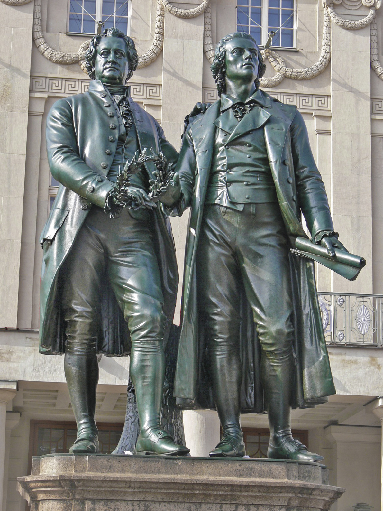
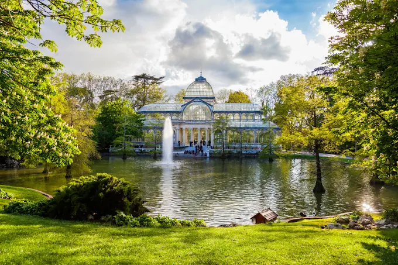
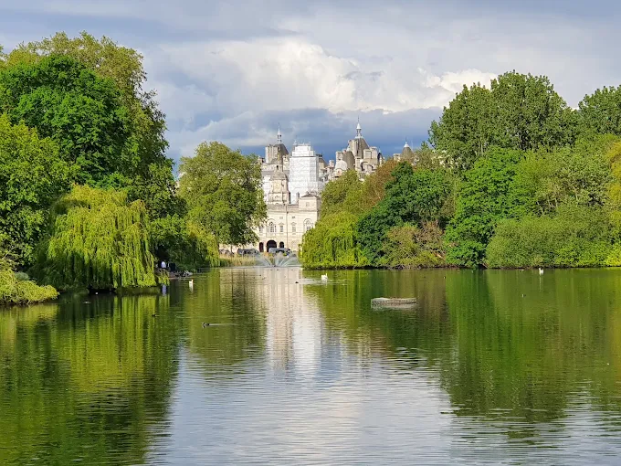
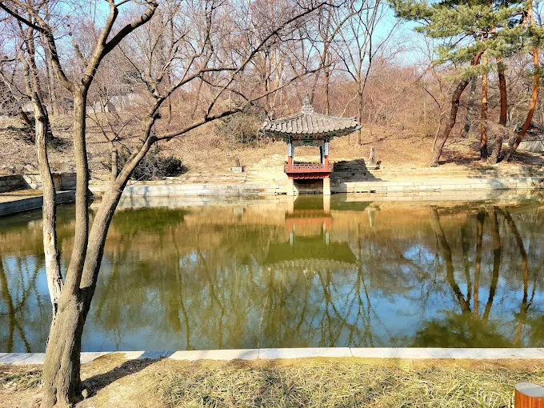
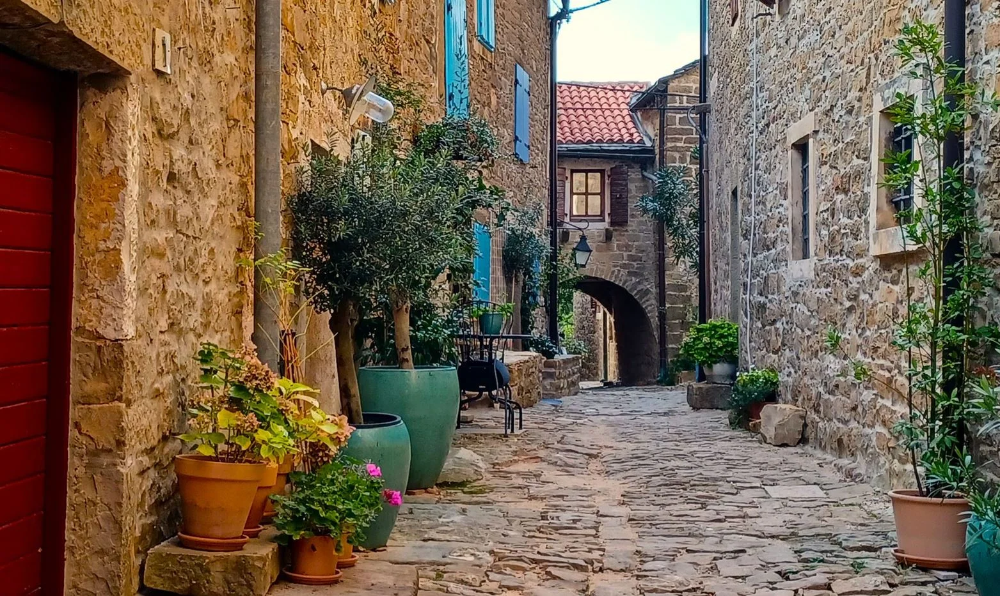
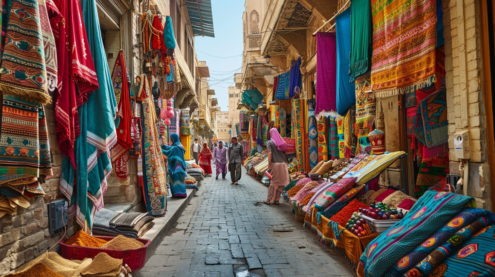
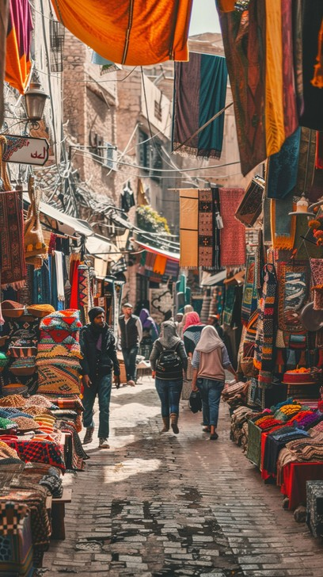

Pictures speak a thousand words, but Weimar tells a story across centuries. Take a visual tour through the classical elegance, green landscapes, and creative spirit that await you. Whether you are dreaming of a literary escape, a deep dive into art history, or a relaxing stroll through royal parks, let these scenes inspire your next adventure.
Category 1: The Literary Giants (Goethe & Schiller)
Immerse yourself in the intellectual golden age of Germany, where legendary poets walked and worked.

The iconic Goethe and Schiller Monument standing proudly in front of the German National Theatre in autumn.“Trace the footsteps of literary titans. Stand where Goethe and Schiller brainstormed the works that shaped European thought.”
Category 2: Architectural Masterpieces
From grand ducal history to the birthplace of modern design.
The grandiose blue and gilt gold palace of the tsars is a how-to guide in rococo style opulence, stupendous financial expenditure and sheer, unquestioned power.A maze of cool, cobbled streets roofed with burnt orange tiles and domed towers, Dubrovnikis a deserved world heritage site, perfect for a wander with a camera and an artistic eye.The architectural brilliance of the world's most recognizable tombs is mind-boggling. Just trying to grasp the size, weight and mathematical brilliance of their construction, led by the architect Imhotep, is off the scale.
Category 3: Parks, Palaces & Scenic Nature
Breathe in the tranquility of Weimar's sprawling green landscapes and royal estates.

A breathtaking view of the iconic Crystal Palace nestled within the lush greenery of Madrid's El Retiro Park. The glass-and-iron pavilion stands majestically beside a tranquil pond, its magnificent structure perfectly mirrored in the water while a soaring fountain provides a soothing, natural soundtrack.

Framing a classic royal landscape, the weeping willows of St. James's Park lean elegantly over the serene lake waters. In the background, the imposing facade of Buckingham Palace rises above the trees, demonstrating a flawless blend of historic architecture and manicured British nature.

Tucked away behind Changdeokgung Palace, the Huwon Secret Garden reveals a brilliant display of autumn colors. A traditional wooden pavilion sits peacefully over the glassy surface of the Aeryeonji Pond, surrounded by a dense, vivid canopy of fiery maples and deep green pines.
Category 4: Charming Alleyways & Local Culture
Wandering through hidden pathways offers an intimate look into a destination's history and daily life. From the time-worn stones of Europe to the bustling open-air markets of North Africa, explore these collections of charming alleyways and the local culture that brings them to life.
• Historic Cobblestone Pathways
These centuries-old stone pathways tell the story of medieval craftsmanship. Winding between historic residences and framed by traditional architectural details, they remain the quiet, enduring arteries of old-world European towns.
Architectural Heritage: Winding paths like the Charming Nuremberg Street display iconic half-timbered styling, while regions throughout Croatia's Old Towns exhibit warm, rustic stone masonry.

Narrow “streets” lined with honey-coloured stone buildings, colorful shutters, laundry draped overhead, potted flowers, iron coach lanterns, meandering along the romantic old-town alleys of towns and cities across Europe never gets old, and Croatia's are particularly charming.
• Vibrant Cultural Market Alleys
Bustling marketplace streets represent the energetic heart of local commerce. Lined with specialized vendors and shaded from the sun, these traditional passages are filled with the scents of spices and the sights of handmade goods.

This bustling market alleyway is a feast for the senses, with rows of stalls draped in vibrant textiles. The rich variety of patterns and colors displayed on the fabrics adds a cultural depth and traditional flair to the scene. • As documented in the Khan el-Khalili Bazaar Guide, historic markets showcase dense arrays of hanging brass lanterns, traditional textiles, and local pottery.

The bustling market street is alive with the vibrant energy of local commerce. Stalls overflow with colorful spices, fresh produce, and handcrafted goods, while the aroma of traditional Moroccan cuisine fills the air. • As documented in the Marrakesh Market Street Guide, these lively streets are a sensory delight, offering a rich tapestry of sights, sounds, and smells that capture the essence of Moroccan culture.
• If you want to check out more of our customer's lively pictures, check out our social media for more!!